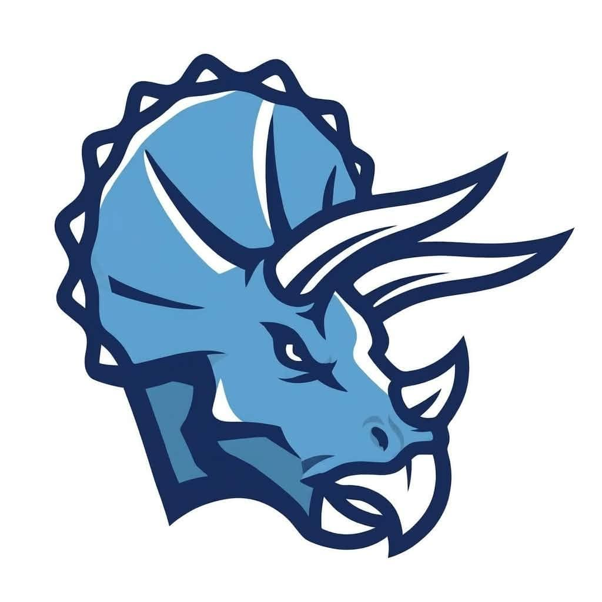
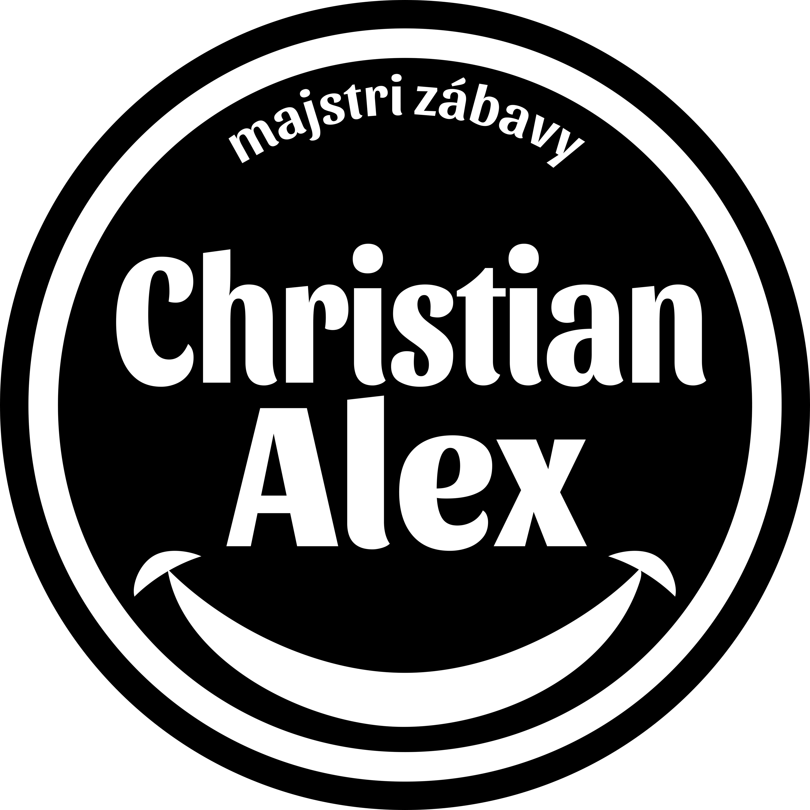
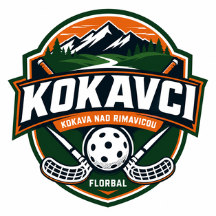
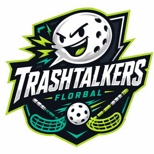

Bodovanie hráčov
| # | Tím | Hráč | Góly | Asistencie | Body |
|---|
| 1 | | Peter Holka | 30 | 9 | 39 |
| 2 |  | Samuel Zajac | 22 | 8 | 30 |
| 3 | | Peter Jach | 15 | 15 | 30 |
| 4 |  | Peter Hužvár | 23 | 6 | 29 |
| 5 |  | Christian Alex | 12 | 16 | 28 |
| 6 | | Jiří Resler | 12 | 15 | 27 |
| 7 | | Štefan Mačuga | 12 | 11 | 23 |
| 8 | | Ľudovít Riša | 11 | 9 | 20 |
| 9 | | Milan Trann | 15 | 4 | 19 |
| 10 |  | Andrej Bavala | 14 | 5 | 19 |
| 11 | | Robert Richter | 7 | 8 | 15 |
| 12 | | Ladislav Cagan | 8 | 6 | 14 |
| 13 | | Marcel Kromka | 7 | 7 | 14 |
| 14 | | Roman Nemčok | 5 | 8 | 13 |
| 15 | | Martin Konôpka | 5 | 6 | 11 |
| 16 | | Matej Vigaš | 6 | 4 | 10 |
| 17 | | Milan Vrábeľ | 4 | 5 | 9 |
| 18 |  | Mario Šimčík | 6 | 2 | 8 |
| 19 | | Michaela Styková | 4 | 4 | 8 |
| 20 | | Oskar Margóczi | 6 | 0 | 6 |
| 21 | | Lukáš Vančík | 2 | 4 | 6 |
| 22 | | Michal Kmeť | 3 | 2 | 5 |
| 23 | | Emma Šoošová | 2 | 3 | 5 |
| 24 | | Marek Hric | 2 | 3 | 5 |
| 25 | | Peter Kereš | 3 | 1 | 4 |
| 26 | | Tomáš Horňák | 0 | 2 | 2 |
Individuálne ocenenia najlepších hráčov
| Ocenenie | Hráč | Výkon |
|---|
| Najlepší strelec | Peter Holka | 30 gólov |
| Najlepší nahrávač | Christian Alex | 16 asistencií |
| Najproduktívnejší hráč* | Samuel Zajac | 30 bodov |
| MVP - najlepší hráč turnaja | Milan Trann | Ocenenie organizátorov |
* Pri individuálnych oceneniach sme chceli vyzdvihnúť viac hráčov turnaja, preto hráč s už udeleným ocenením najlepšieho strelca nezískal zároveň aj cenu pre najproduktívnejšieho hráča.
* Štatistiky sme sa snažili zapisovať priebežne a čo najpresnejšie podľa dostupných hlásení; ak sa pri niektorom údaji objavila drobná nepresnosť, ďakujeme za pochopenie.
Základná skupina
| # | Tím | Zápasy | Výhry | Remízy | Prehry | Skóre | Body |
|---|
| 1 | Majstri Zábavy | 5 | 4 | 1 | 0 | 38:19 | 13 |
| 2 | FBC Kings | 5 | 4 | 1 | 0 | 42:25 | 13 |
| 3 | Shell Riders | 5 | 3 | 0 | 2 | 39:29 | 9 |
| 4 | Dinosauri | 5 | 2 | 0 | 3 | 28:26 | 6 |
| 5 | Kokavci | 5 | 1 | 0 | 4 | 22:43 | 3 |
| 6 | Trashtalkers | 5 | 0 | 0 | 5 | 11:38 | 0 |
Celkové vyhodnotenie turnaja
| Poradie | Tím | Rozhodujúci zápas | Výsledok |
|---|
| 1. | FBC Kings | Finále vs Majstri Zábavy | 6:2 |
| 2. | Majstri Zábavy | Finále vs FBC Kings | 2:6 |
| 3. | Dinosauri | O 3. miesto vs Shell Riders | 7:3 |
| 4. | Shell Riders | O 3. miesto vs Dinosauri | 3:7 |
| 5. | Kokavci | O 5. miesto vs Trashtalkers | 4:1 |
| 6. | Trashtalkers | O 5. miesto vs Kokavci | 1:4 |